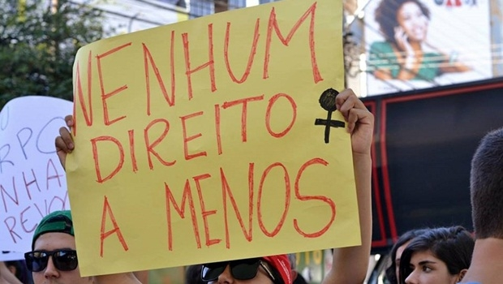
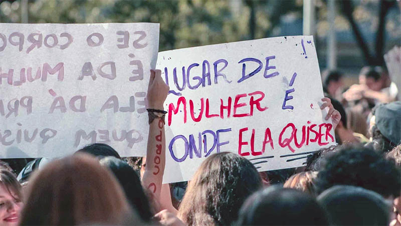

Este site foi criado para conscientizar sobre a igualdade de gênero e oferecer informações confiáveis sobre o
tema.
O site é voltado para qualquer pessoa interessada em entender
o que é igualdade de gênero. Ao centralizar as informações do site,
buscamos facilitar o acesso ao conhecimento, combater
preconceitos e inspirar ações positivas para termos uma sociedade
mais justa e igualitária, onde todos os gêneros tenham o mesmo direito.
“O feminismo, por definição, é acreditar que tanto homens como mulheres devem ter direitos e oportunidades
iguais. É a teoria política, econômica e social da igualdade de sexos.” — Emma Watson.
Você sabe o que é igualdade de gênero?
Vamos conferir:
Igualdade de Gênero é a “Igualdade em direitos, responsabilidades e oportunidades das mulheres e dos homens,
bem como das meninas e dos meninos, consiste no princípio de garantir que homens e mulheres tenham os mesmos
direitos, oportunidades e tratamento, eliminando estereótipos e barreiras que limitam o potencial de ambos
os gêneros. Para alcançá-la, é necessário implementar políticas públicas inclusivas, promover a educação
igualitária e incentivar a participação de homens no processo, além de equilibrar responsabilidades
domésticas e profissionais. A importância dessa igualdade está em criar uma sociedade mais justa, com menos
pobreza e violência, e maior participação democrática e econômica.
Diante disso, foram criados 17 Objetivos de Desenvolvimento Sustentável, estabelecidos pela Organização das
Nações Unidas (ONU) em 2015 e compõem uma agenda mundial para a construção e implementação de políticas
públicas que visam guiar a humanidade até 2030. Dentre eles, temos a ODS5, que surgiu com o propósito de
reparação histórica total, que visa melhorar as oportunidades e garantias de vidas sem violência ou
discriminação, em quaisquer ambientes, para meninas e mulheres.
Aqui temos um video explicando sobre a ODS5, onde fala em poucos minutos sobre a Igualdadede Gênero, de forma
clara e objetiva.
Desafios
A igualdade de gênero é um dos grandes desafios da sociedade, apesar dos avanços conquistados nas últimas décadas, ainda existem diferenças entre homens e mulheres em diversos aspectos, confira os principais desafios;

Desigualdade no mercado de trabalho;
Ocorre quando homens e mulheres não têm as mesmas oportunidades, condições e recompensas
profissionais. As mulheres ainda ganham menos que os homens, mesmo exercendo as mesmas funções. Além
disso, temos menor representatividade feminina em cargos de liderança e em áreas como ciência,
tecnologia e política.
Violência de gênero;
Qualquer ato de agressão física, sexual, psicológica, moral ou patrimonial cometido contra uma pessoa
por causa do seu gênero, atinge principalmente as mulheres e meninas, mas também pode afetar pessoas
que fogem dos padrões tradicionais de gênero. Isso está relacionado ao desequilíbrio de poder entre
homens e mulheres na sociedade.

Estereótipos e desigualdade nas responsabilidades sociais;
Acontecem quando a sociedade impõe papéis diferentes para homens e mulheres, baseados em ideias
antigas sobre o que cada um “deve” fazer, de acordo com seu gênero. Por exemplo pensamentos que
dizem a respeito sobre como homens devem ser fortes, trabalhar fora e liderar, enquanto mulheres
devem ser delicadas, cuidar da casa e dos filhos. Esses estereótipos influenciam desde a infância as
escolhas e oportunidades das pessoas.
Metas
A ODS 5, tem como objetivo alcançar a igualdade de gênero e empoderar todas as mulheres e meninas. Aqui estão algumas das principais metas dessa ODS;
5.1 Acabar com todas as formas de discriminação contra mulheres e meninas. Garantir que elas tenham as
mesmas oportunidades que os homens em todas as áreas: educação, trabalho, política e direitos
sociais.
5.2 Eliminar todas as formas de violência de gênero. Combater a violência física, sexual e psicológica,
incluindo o feminicídio, a exploração sexual e o tráfico de pessoas.
5.3 Eliminar todas as práticas nocivas,
como o casamento infantil, precoce e forçado, e a mutilação genital feminina.
5.4 Reconhecer e valorizar o trabalho doméstico e de cuidados não remunerado,
promovendo a responsabilidade compartilhada entre homens e mulheres.
5.5 Garantir a plena e efetiva participação das mulheres na vida pública e econômica. Assegurar que as
mulheres tenham igualdade de oportunidades em cargos de liderança, no governo, nas empresas e nas
decisões que afetam suas vidas.
5.6 Assegurar o acesso universal à saúde sexual e reprodutiva e aos direitos reprodutivos.
5.a Empreender reformas para dar às mulheres direitos iguais aos recursos econômicos, como acesso à propriedade,
controle sobre a terra, serviços financeiros, herança e recursos naturais.
5.b Aumentar o uso de tecnologias que promovam o empoderamento das mulheres,
especialmente as tecnologias da informação e comunicação.
5.c Criar leis e políticas eficazes
para promover a igualdade de gênero e combater a discriminação.
Saiba mais sobre as ODS;
Os 17 Objetivos são integrados e indivisíveis, e mesclam, de forma equilibrada, as três dimensões do
desenvolvimento sustentável: a econômica, a social e a ambiental. São como uma lista de tarefas a serem
cumpridas pelos governos, a sociedade civil, o setor privado e todos cidadãos na jornada coletiva para um
2030 sustentável. Nos próximos anos de implementação da Agenda 2030, os ODS e suas metas irão estimular e
apoiar ações em áreas de importância crucial para a humanidade: Pessoas, Planeta, Prosperidade, Paz e
Parcerias.